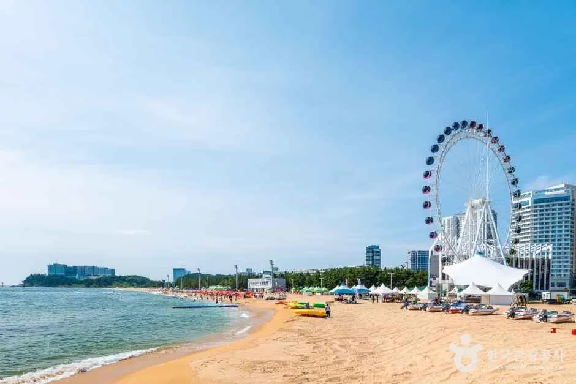
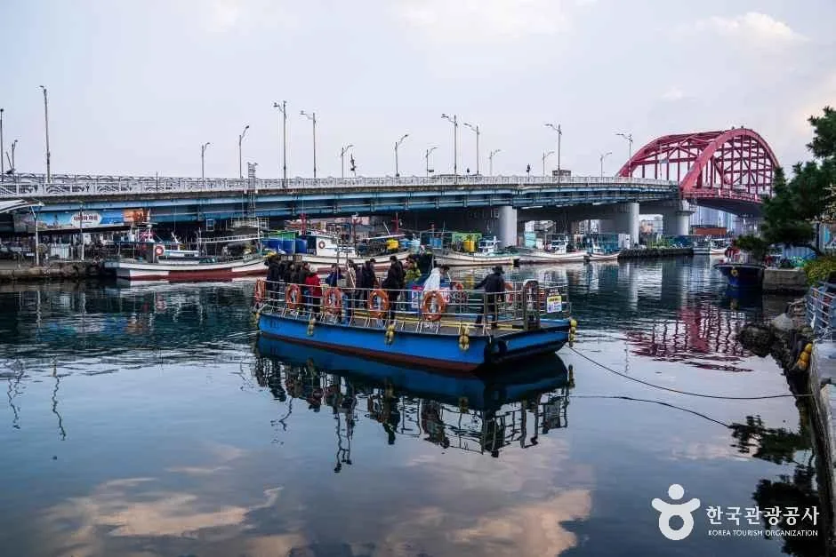
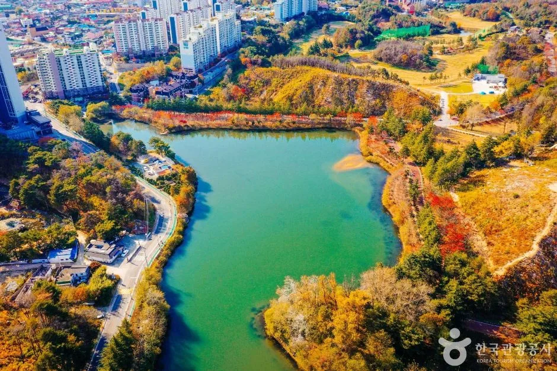
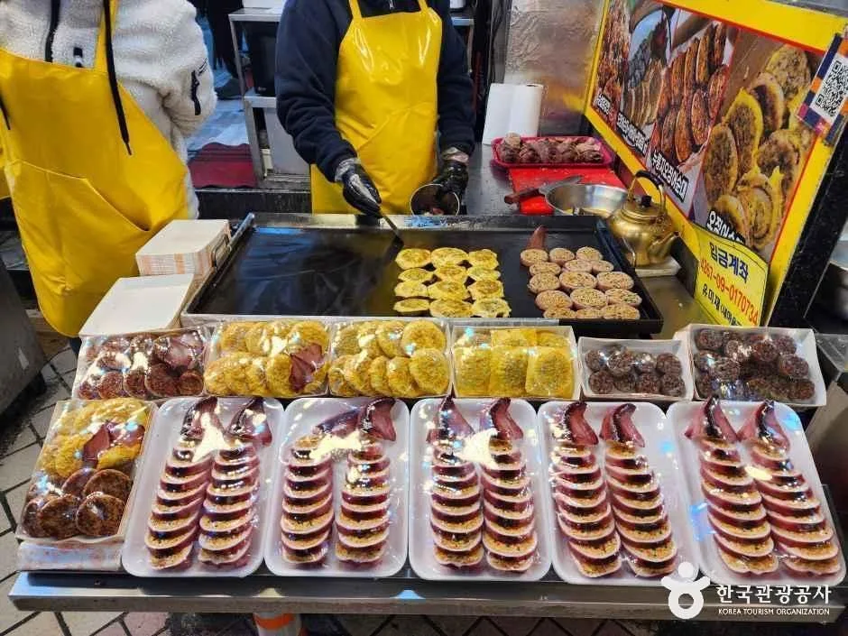

▲ 속초해수욕장과 대관람차 '속초아이'. 속초 시내에서 도보권인 해변이라 여행 코스의 시작점으로 삼기 좋다 ⓒ 한국관광공사
속초 시내와 아바이마을 사이, 폭 50m 남짓한 물길을 잇는 갯배는 지금도 모터가 아니라 사람이 직접 쇠줄을 당겨 움직인다. 실향민들이 정착하며 만든 이 작은 뱃길부터 대포항, 영랑호, 영금정, 속초관광수산시장, 설악산 입구까지 — 속초에서 자차로 하루에 돌아볼 만한 곳과 주차·이용 정보를 정리했다.
1. 아바이마을 — 지금도 사람이 끄는 갯배

▲ 아바이마을 갯배. 50m 남짓한 물길을 사람이 직접 쇠줄을 당겨 움직이는 무동력 나룻배다 ⓒ 한국관광공사
아바이마을은 1951년 한국전쟁 당시 함경도에서 남하한 실향민들이 정착하며 만들어진 마을이다. '아바이'는 함경도 사투리로 나이 지긋한 남자를 친근하게 부르는 말이다. 드라마 '가을동화' 촬영지로 알려지며 관광지로 자리 잡았고, 지금도 골목 곳곳에 함흥냉면·오징어순대·아바이순대국을 파는 향토 음식점이 늘어서 있다.
갯배 이용 정보
- 편도 요금: 소인(초등학생) 300원, 대인 500원, 자전거·손수레 500원
- 속초시민은 무료(신분증 지참 필수)
- 운행시간: 5~10월 05:00~23:00, 11~4월 05:30~22:30 (기상 상황에 따라 변경 가능)
- 탑승 시간은 약 5분 정도로 짧다
- 기상 악화 시 운행이 중단될 수 있어 방문 전 속초시청 문의(033-639-2449)가 안전하다
2. 대포항 — 활어회센터와 항구 상권

▲ 속초 대포항. 활어회센터와 수산시장이 몰려 있어 식사와 장보기를 함께 해결할 수 있다 ⓒ 한국관광공사
대포항은 활어회센터가 밀집한 항구로, 국도 7호선 변에 있어 동해안 드라이브 코스에서 들르기 편하다. 대표적인 활어회센터들은 라마다호텔 인근에 몰려 있으며, 주변에 주차장 4곳이 흩어져 있어 성수기에도 자리를 찾을 여지가 있는 편이다.
주차 요금 (2026년 1월 요금 조정 반영)
- 최초 20분 무료
- 이후 최초 10분 600원, 추가 10분당 300원, 1일 최대 10,000원(기존 6,000원에서 인상)
- 인근에 주차장 4곳이 분산돼 있어 혼잡 시 대체 이동이 가능하다
3. 영랑호 — 물 위를 걷는 400m 부교

▲ 가을 영랑호 항공 전경. 자연 석호를 따라 둘레길과 자전거길이 조성돼 있다 ⓒ 한국관광공사
영랑호는 둘레 약 7.2~7.8km의 자연 석호로, 도보로는 두 시간 안팎, 자전거로는 8km 길이 순환로를 이용할 수 있다. 신라 화랑 '영랑'이 경치에 반해 무예 대회 참가를 포기했다는 설화에서 이름을 따왔다. 2021년 11월 개통한 영랑호수윗길은 호수 위로 놓인 폭 2.5m, 길이 400m의 목조 부교로, 개통 한 달 만에 8만 7,000여 명이 다녀갈 만큼 인기를 끌었다.
영랑호수윗길 이용 정보
- 운영시간: 오전 7시~오후 9시 (연중무휴)
- 입장료·주차료 모두 무료
- 중앙의 지름 30m 원형 광장에서 설악산 능선을 편하게 조망할 수 있다
- 속초 8경 중 하나인 '범바위'도 산책로 진입부에서 볼 수 있다
4. 영금정 — 파도 소리가 거문고 같다는 일출 명소

▲ 영금정. 암반 위에 세워진 정자까지 약 50m 구름다리로 이어진다 ⓒ 한국관광공사
영금정(靈琴亭)이라는 이름은 파도가 암반에 부딪힐 때 나는 소리가 신령한 거문고 소리 같다고 해서 붙여졌다. 해상 암반 위에 세워진 정자까지는 약 50m 길이 구름다리를 건너 들어간다. 해가 수평선 위로 떠오르는 순간 바다와 정자가 황금빛으로 물드는 일출 명소로, 새해 첫날에는 해돋이를 보려는 인파가 몰린다. 정자까지 이어지는 구름다리의 정식 명칭은 동명해교이며, 인접한 속초등대전망대(무료 개방)에서는 속초 시내와 영금정 일대를 한눈에 내려다볼 수 있어 함께 묶어 돌아보기 좋다.
5. 속초관광수산시장 — 닭강정 골목과 주차권

▲ 속초관광수산시장 먹거리 골목. 닭강정과 오징어순대, 아바이순대 등이 대표 메뉴로 꼽힌다 ⓒ 한국관광공사
속초관광수산시장은 1953년 군 공병대와 상인들이 합심해 갯벌을 메우고 형성한 '제3지구 시장'에서 출발했다. 1966년 행정구역 개편으로 중앙시장이라는 이름을 얻었고, 2006년 지금의 이름으로 바뀌며 동해안을 대표하는 관광형 수산시장으로 자리 잡았다. 연간 방문객 수 기준으로 강원도에서 검색량이 가장 많은 관광지로 꼽힐 만큼 인지도가 높고, 닭강정 골목과 건어물·젓갈부터 살아 움직이는 활어까지 갖춰져 있다.
주차 이용 방법
- 주차장 유료 운영시간은 08:00~21:00, 그 외 시간은 무료
- 시장에서 1만 원 이상 구매 시 주차권 지급, 1매당 30분씩 1일 최대 2매(1시간) 사용 가능
- 경차·저공해차량은 주차료 50% 감면(2026년 1월 조정 전 60%), 장애인·국가유공자 등 일반 감면율은 30%로 조정됐다
6. 설악산 입구 — 소공원 주차와 케이블카 팁

▲ 설악산 능선. 속초 시내에서 차로 20~30분 거리로, 하루 코스의 마지막 목적지로 묶기 좋다 ⓒ 한국관광공사
속초에서 자차로 이동한다면 설악산 소공원까지 묶는 동선도 무리 없다. 소공원 주차장은 승용차 기준 6,000원, 대형차는 9,000원 정액이며, 단풍철 주말에는 오전 이른 시간에 만차가 돼 경찰·모범운전자의 수신호로 진입 자체가 통제되는 경우가 있다. 권금성 케이블카는 산악 지형 특성상 사전예약을 받지 않고 당일 현장 구매만 가능하며, 왕복 요금은 대인 16,000원·소인 12,000원 수준이라는 점도 미리 알아두면 헛걸음을 줄일 수 있다.

▲ 설악산 산책로. 소공원에서 출발하는 트레킹 코스로 이어진다 ⓒ CarPrism
7. 하루 동선 정리 — 자차 vs 시티투어버스

▲ 속초 시티투어버스. 주차 부담 없이 주요 명소를 도는 대안으로 대중교통 이용객에게 추천할 만하다 ⓒ 한국관광공사
여섯 곳을 하루에 다 돌려면 동선을 미리 짜두는 편이 효율적이다. 해안가 명소부터 시작해 시장, 호수 순으로 이동하면 이동 거리를 줄일 수 있다.
| 시간대 | 장소 | 메모 |
|---|---|---|
| 오전 | 속초해수욕장 → 영금정 | 이른 시간 방문 시 주차·인파 부담이 적다 |
| 낮 | 아바이마을(갯배) → 속초관광수산시장 | 점심은 시장 닭강정 골목에서 해결하기 좋다 |
| 오후 | 영랑호수윗길 → 대포항 | 영랑호는 늦은 오후 산책, 대포항은 저녁 식사 코스로 적합 |
| 연계 | 설악산 소공원 | 단풍철에는 별도 일정으로 분리하는 편이 안전하다 |
대중교통 위주로 다닌다면 속초 시티투어버스도 대안이다. 주요 명소를 순환하며 주차 걱정 없이 이동할 수 있어, 자차와 대중교통을 상황에 맞게 섞어 쓰는 것도 방법이다.
8. 정리
체크포인트
- 아바이마을 갯배는 편도 대인 500원, 속초시민은 무료(신분증 지참)다.
- 대포항 주차는 20분 무료 이후 10분당 300원 안팎(1일 최대 10,000원, 2026년 1월 요금 조정)이다.
- 영랑호수윗길(400m 부교)은 입장료·주차료 모두 무료, 운영시간은 07:00~21:00다.
- 속초관광수산시장은 1만 원 이상 구매 시 주차권 2매(최대 1시간)가 지급된다.
- 설악산 소공원은 단풍철 주말 만차 시 진입 자체가 통제될 수 있어 별도 일정을 권한다.